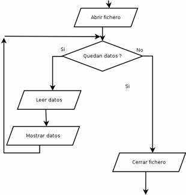
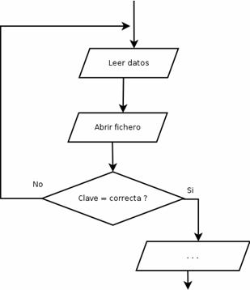
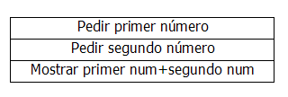
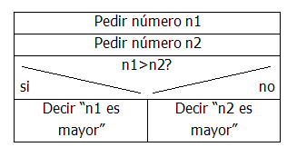
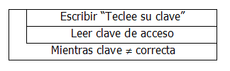
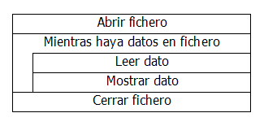

Cuando comenzamos el tema, vimos cómo ayudarnos de los diagramas de flujo para plantear lo que un programa debe hacer. Si entendemos esta herramienta, el paso a C (o a casi cualquier otro lenguaje de programación es sencillo). Pero este tipo de diagramas es antiguo, no tiene en cuenta todas las posibilidades del lenguaje C (y de muchos otros lenguajes actuales). Por ejemplo, no existe una forma clara de representar una orden “switch”, que equivaldría a varias condiciones encadenadas.
Por su parte, un bucle “while” se vería como una condición que hace que algo se repita (una flecha que vuelve hacia atrás, al punto en el que se comprobaba la condición):

Y un “do..while” como una condición al final de un bloque que se repite:

Aun así, existen otras notaciones más modernas y que pueden resultar más cómodas. Sólo comentaremos una: los diagramas de Chapin. En ellos se representa cada orden dentro de una caja:

Las condiciones se indican diviendo las cajas en dos:

Y las condiciones repetitivas se indican dejando una barra a la izquierda, que marca qué es lo que se repite, tanto si la condición se comprueba al final (do..while):

como si se comprueba al principio (while):

En ambos casos, no existe una gráfica “clara” para los “for”.